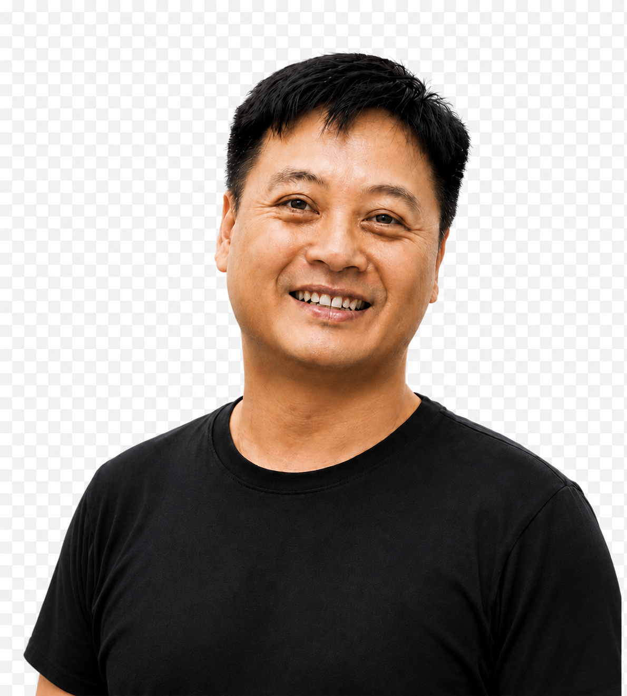

About Drone X Malaysia关于 Drone X MalaysiaTentang Drone X Malaysia
Drone X Malaysia is a drone technology company with agriculture at its core, extending into industrial and public sector applications. Through compliant operations, a professional team and proven technology, we help Malaysian farmers and businesses work more efficiently.Drone X Malaysia 是一家以农业为核心、兼顾工业与公共部门应用的无人机科技公司，致力以合法合规、专业团队与先进技术，协助马来西亚农夫与企业提升作业效率。Drone X Malaysia ialah sebuah syarikat teknologi dron yang berteraskan pertanian, meluas ke aplikasi industri dan sektor awam. Melalui operasi yang mematuhi peraturan, pasukan profesional dan teknologi terbukti, kami membantu petani dan perniagaan Malaysia bekerja dengan lebih cekap.
Drone X Core TeamDrone X 核心成员Pasukan Teras Drone X
All three core members are durian orchard owners with hands-on farming experience — they understand what farmers actually need.三位核心成员皆为榴莲园主，深耕农业一线，深知农夫的实际需求。Ketiga-tiga ahli teras merupakan pemilik kebun durian dengan pengalaman bertani secara langsung — mereka memahami keperluan sebenar petani.

Vision愿景Visi
To be Malaysia's most trusted drone solutions company, starting from agriculture and extending into industrial and public applications.成为马来西亚最值得信赖的无人机解决方案公司，从农业出发，延伸至工业与公共领域应用。Menjadi syarikat penyelesaian dron paling dipercayai di Malaysia, bermula daripada pertanian dan meluas ke aplikasi industri serta awam.

Mission使命Misi
To help farmers and businesses raise efficiency, lower cost and command aerial data through safe, practical and innovative drone solutions.以安全、实用与创新的无人机方案，协助农夫与企业提升效率、降低成本、掌握空中数据。Membantu petani dan perniagaan meningkatkan kecekapan, menurunkan kos dan menguasai data udara melalui penyelesaian dron yang selamat, praktikal dan inovatif.